Autopilot social mediów na Twoim serwerze
Poster działa 24/7 na Twoim NAS-ie albo serwerze i prowadzi Twoje profile: śledzi wiadomości z Twojego tematu (kanały RSS, Google News, X), AI wybiera najważniejszą i przygotowuje posty, a po Twoim ✅ w Telegramie publikuje je na X i Facebooku. Masz coś własnego do ogłoszenia? Napisz raz – AI dopasuje post do każdej platformy.
LITE jest darmowy, na licencji AGPL-3.0. Wystarczy Docker na NAS-ie albo serwerze z Linuksem.
Zainstalujesz go jednym poleceniem przez SSH:
curl -fsSL https://posterapp.pl/install.sh | sudo bash
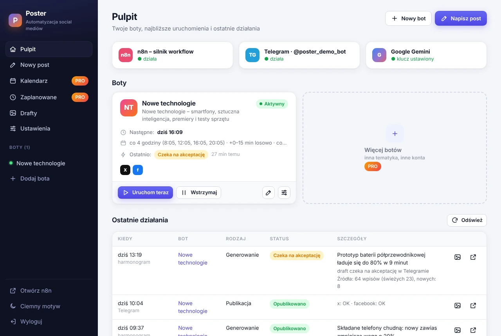
Jak to działa
Temat i źródła ustawiasz raz. Resztę Poster robi sam, według harmonogramu.
Świeże newsy
Kanały RSS portali, Google News i profile X. Duplikaty i stare wiadomości odpadają.
Wybór i tekst
Gemini albo model na Twoim sprzęcie (Ollama) wybiera najważniejszą wiadomość i pisze posty.
Ty akceptujesz
Draft ze zdjęciem z artykułu trafia do Telegrama. ✅ publikuje, ❌ odrzuca.
Opublikowane
X i Facebook dostają post, a Ty – raport. Nieudaną platformę ponawiasz jednym kliknięciem 🔁.
Napisz raz, opublikuj wszędzie
Własna nowość – promocja, wydarzenie, opinia? Napisz post po swojemu, a AI dopasuje go do każdej platformy.
- Osobna wersja na X (do 280 znaków) i na Facebooka – AI trzyma się Twoich faktów i nic nie dopisuje
- Zdjęcie prosto z aparatu telefonu i link na końcu posta
- Poprawiasz wersje i publikujesz od razu albo wysyłasz do akceptacji w Telegramie
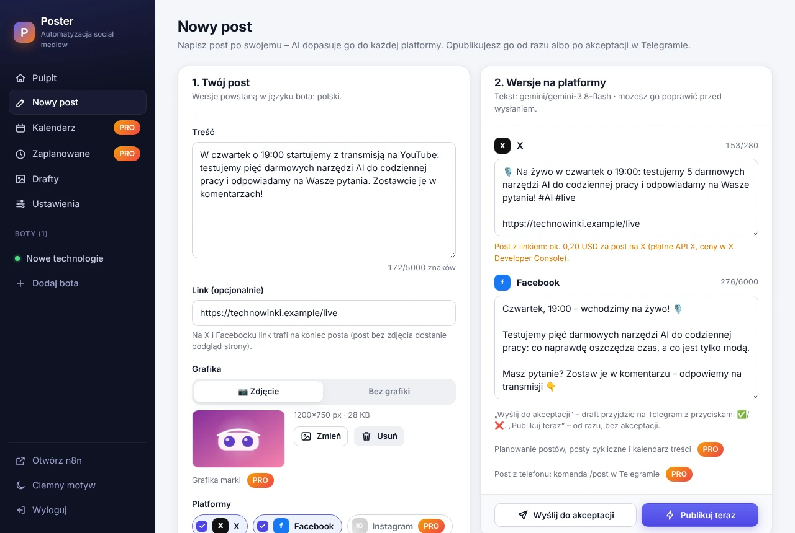
Harmonogram jak u człowieka
Co kilka godzin albo o wybranych godzinach – w wybrane dni tygodnia.
- Podgląd najbliższych uruchomień przed zapisaniem
- Losowe przesunięcie do 45 minut, żeby posty nie wychodziły co do minuty
- Pauza, wznowienie i „Uruchom teraz” jednym kliknięciem
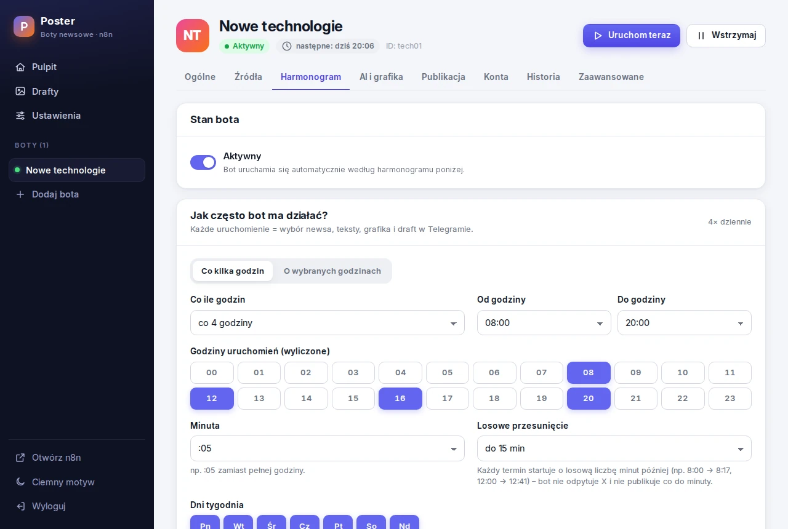
Koszty pod kontrolą
Karta „Koszt jednego posta” pokazuje, co kosztuje przy obecnych ustawieniach.
- Grafika nic nie kosztuje – zdjęcie z artykułu albo post z linkiem
- Tekst AI zwykle mieści się w darmowym limicie (klucz Gemini bez billingu) albo działa na Twoim sprzęcie
- Orientacyjny koszt posta przez X API widzisz, zanim włączysz publikację
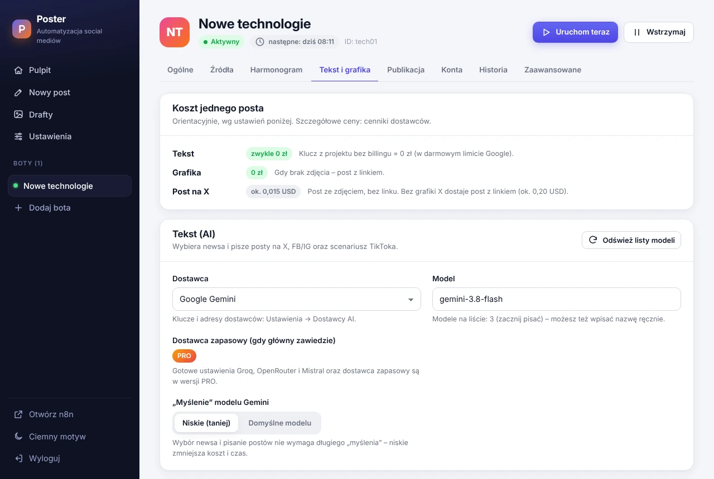
Każdy draft w archiwum
Grafiki i teksty wszystkich postów zostają na Twoim NAS-ie – do skopiowania, pobrania albo ręcznej publikacji.
- Teksty na X i Facebooka oraz scenariusz TikToka
- Wyniki publikacji z linkami do postów
- Uzasadnienie, dlaczego AI wybrało tę wiadomość
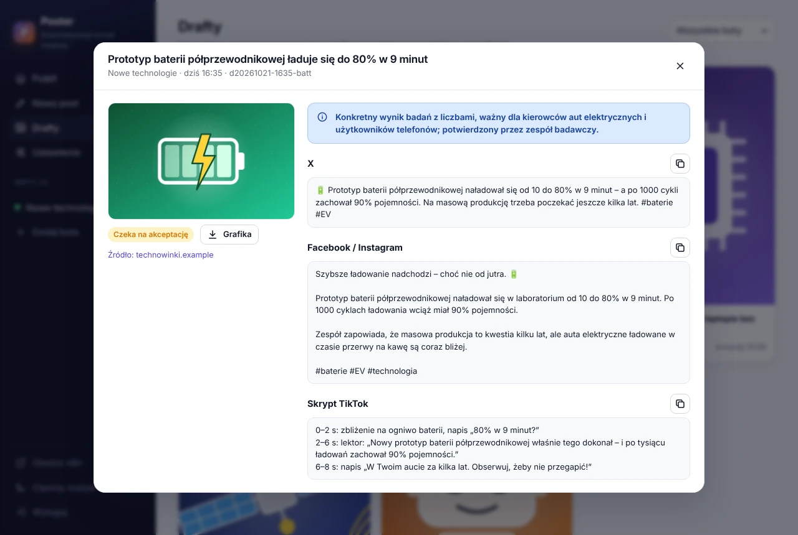
Klucze zostają u Ciebie
Klucze API i tokeny kont leżą tylko w panelu na Twoim NAS-ie. Bez konta w chmurze i bez śledzenia.
Bez otwierania portów
Panel sam odpytuje Telegram, więc NAS nie musi być wystawiony do internetu.
Po polsku i po angielsku
Panel, wiadomości w Telegramie i dokumentacja w obu językach. Panel działa też na telefonie.
Dla prowadzących więcej niż jeden profil
Ten sam program z większą liczbą botów, platform i automatyzacji – a do tego rok aktualizacji i wsparcia.
- Wiele botów – każdy z własnym tematem, kontami, harmonogramem i czatem Telegram; kopia bota jednym kliknięciem
- Instagram i TikTok – posty ze zdjęciem na Instagramie i 8-sekundowe pionowe wideo na TikToka z grafiki posta (darmowa animacja robiona na Twoim serwerze, bez AI)
- Threads i Bluesky – tekst z kartą linku albo zdjęcie; posty z newsów biorą tekst z X, więc bez dodatkowego kosztu AI
- Twój kanał Telegram – bot Telegram, który przysyła Ci drafty, publikuje też na Twoim kanale: zdjęcie z podpisem albo post z podglądem linku
- Twoja strona albo blog – każdy nowy artykuł staje się postami na wszystkich platformach, z zajawką AI albo z darmowego szablonu
- Twój kanał YouTube – każdy nowy film ogłoszony na wszystkich platformach z miniaturą i linkiem, bez logowania do YouTube
- Grafika marki, gdy artykuł nie ma zdjęcia (albo do każdego posta, jeśli wybierzesz) – Twój obrazek, np. logo na tle
- Własne posty na wszystkich siedmiu platformach – także wersje na Instagram, Threads, Bluesky, kanał Telegram i TikToka, z Twoim zdjęciem albo grafiką marki
- Zaplanowane i cykliczne posty – własny post wyjdzie o wybranym dniu i godzinie albo cyklicznie (np. w każdy poniedziałek o 9:00, za każdym razem innymi słowami), dla jednego bota albo kilku naraz
- Kalendarz treści – miesiąc albo tydzień opublikowanych i zaplanowanych postów, serii i przebiegów botów, także na telefonie
-
Posty z Telegrama – wyślij botowi
/postz tekstem albo zdjęciem z telefonu; draft z wersjami na każdą platformę wróci z ✅ - Autopilot – publikacja newsów bez akceptacji
- Więcej dostawców AI – Groq, OpenRouter, Mistral i dostawca zapasowy; miesięczny licznik użycia AI
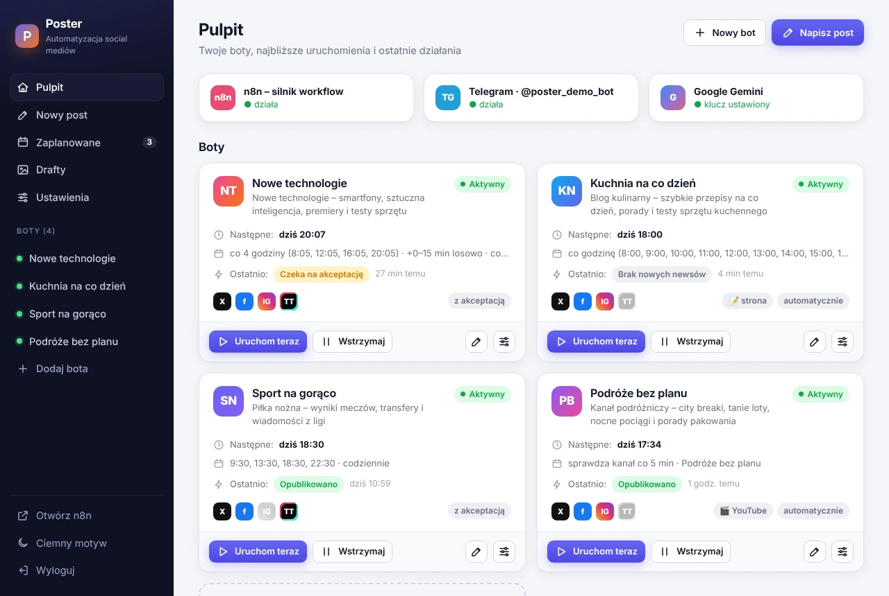
Kalendarz treści
Widzisz, co wyszło i co dopiero wyjdzie – własne posty, serie cykliczne i przebiegi botów.
- Miesiąc albo tydzień ze szczegółami każdego dnia – także na telefonie
- Posty cykliczne: codziennie, co tydzień w wybrane dni albo co miesiąc – AI przeredaguje tekst przed każdą powtórką
- Pomiń jeden termin, wyślij post od razu albo przesuń całą serię
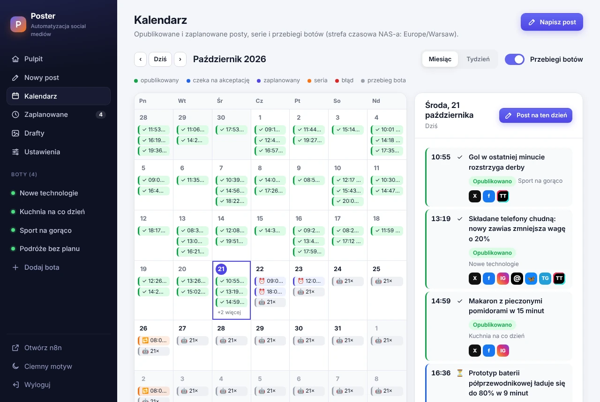
Dla twórców YouTube
Nowy film na kanale? Poster ogłosi go na X, Facebooku, Instagramie, Threads, Bluesky, Twoim kanale Telegram i TikToku – zwykle 15–30 minut później.
- Wklejasz link do kanału – bez logowania do YouTube i bez kluczy API
- Zapowiedź od AI albo darmowy szablon, miniatura filmu i link youtu.be
- Ty wybierasz: filmy, Shorts, zapisy transmisji – premiera czeka na start
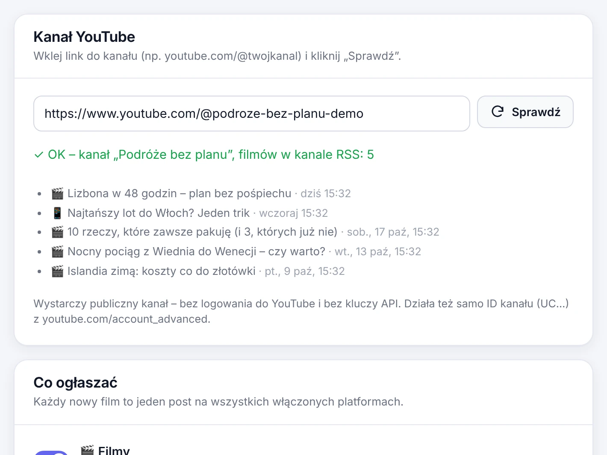
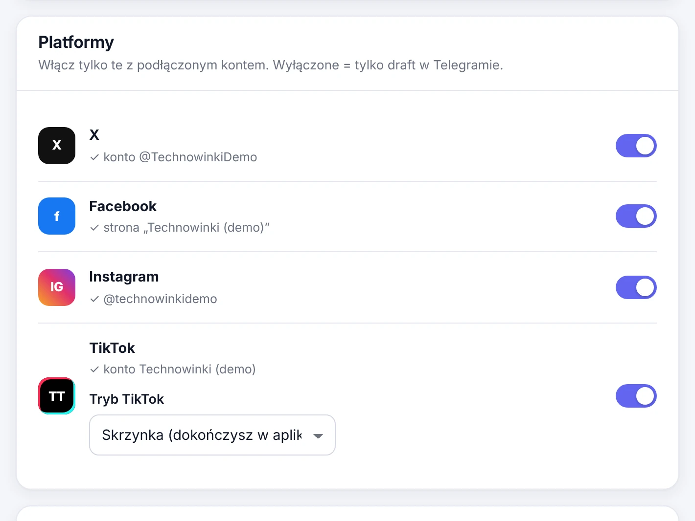
Siedem platform
X, Facebook, Instagram, Threads, Bluesky, kanał Telegram i TikTok – każda włączana jednym przełącznikiem, z akceptacją w Telegramie albo automatycznie.
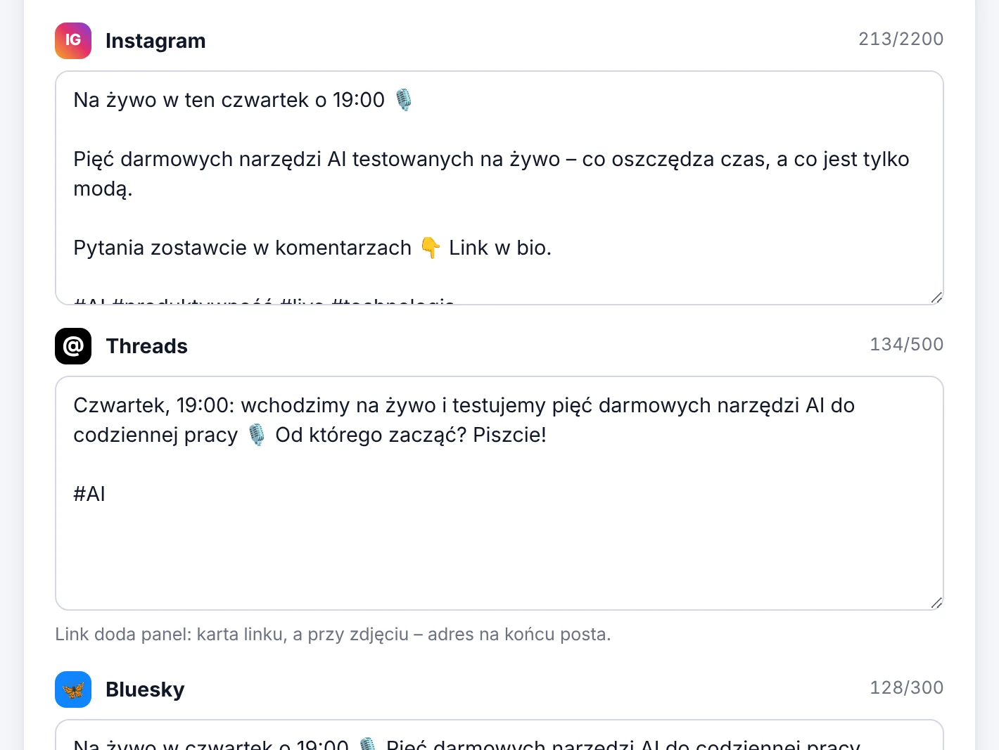
Własny post na każdą platformę
Obok wersji na X i Facebooka AI pisze wersje na Instagram, Threads i Bluesky w limicie każdej platformy – i podpis na TikToka z hasłem do animacji.
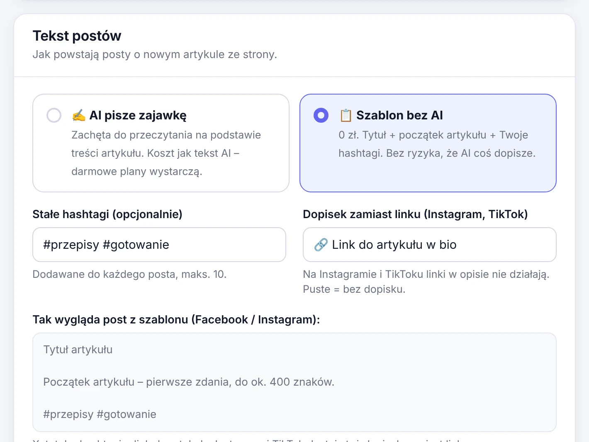
Twoja strona albo blog
Każdy nowy artykuł zamienia się w posty – z zajawką AI albo z darmowego szablonu, który niczego nie dopisuje.
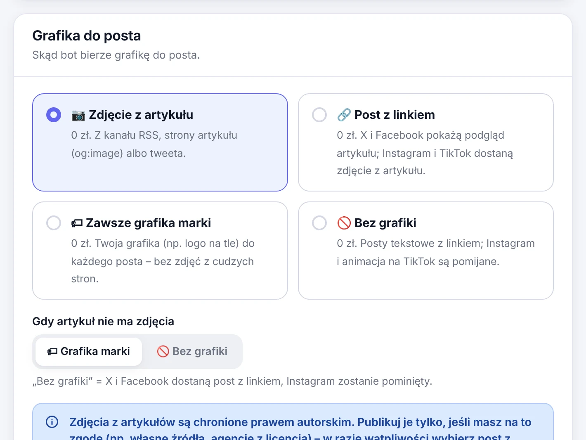
Grafika do każdego posta
Artykuł bez zdjęcia? Bot wstawi Twoją grafikę marki – albo grafikę marki do każdego posta, bez zdjęć z cudzych stron.
| Funkcja | LITE | PRO |
|---|---|---|
| Boty | 1 | bez limitu |
| Źródła: RSS, Google News, profile X | ✓ | ✓ |
| Harmonogram, pauza, „Uruchom teraz” | ✓ | ✓ |
| Akceptacja draftów w Telegramie | ✓ | ✓ |
| Publikacja newsów bez akceptacji (autopilot) | – | ✓ |
| Własny post dopasowany przez AI, „Publikuj teraz” | X, Facebook | wszystkie 7 platform |
| Planowanie własnych postów, kilka botów naraz | – | ✓ |
| Posty cykliczne i kalendarz treści | – | ✓ |
Własny post z Telegrama (/post) |
– | ✓ |
| X i Facebook | ✓ | ✓ |
| ręcznie | ✓ | |
| Threads i Bluesky | – | ✓ |
| Kanał Telegram | – | ✓ |
| Wideo na TikToka z grafiki posta (animacja) | tylko scenariusz | ✓ |
| Tryb strony / bloga | – | ✓ |
| Tryb kanału YouTube (nowe filmy → posty) | – | ✓ |
| Tekst AI: Gemini, Ollama, dowolne API zgodne z OpenAI | ✓ | ✓ |
| Groq, OpenRouter, Mistral i dostawca zapasowy | – | ✓ |
| Zdjęcie z artykułu, post z linkiem | ✓ | ✓ |
| Grafika marki | – | ✓ |
| Miesięczny licznik użycia AI | – | ✓ |
| Drafty, historia, alerty, koszt posta, panel PL/EN | ✓ | ✓ |
| Aktualizacje i wsparcie | społeczność | 12 miesięcy |
Cennik
Jedna płatność, bez abonamentu. Po okresie aktualizacji Twoja instalacja działa dalej.
LITE
Open source na licencji AGPL-3.0.
- 1 bot, X i Facebook
- Akceptacja w Telegramie
- Własne posty dopasowane przez AI
- Aktualizacje z GitHuba
PRO cena na start
Cena startowa dla pierwszych 20 licencji – rabat naliczy się przy zakupie.
- Wszystkie funkcje PRO
- 12 miesięcy aktualizacji i wsparcia
- Przedłużenie: 199 zł za rok – opcjonalnie · przedłuż
Wdrożenie
Poster PRO zainstalowany i skonfigurowany za Ciebie.
- Instalacja na Twoim NAS-ie albo serwerze
- Aplikacje deweloperskie X, Meta, Threads i TikToka
- Pierwszy bot gotowy do publikacji
Płatności obsługuje Polar jako sprzedawca (merchant of record): przyjmuje płatność i rozlicza podatki. Zwrot w ciągu 14 dni, dopóki nie aktywujesz licencji – warunki licencji PRO.
Pytania
Czego potrzebuję, żeby uruchomić Postera?
NAS-a albo serwera z Linuksem, Dockerem i Docker Compose v2, ok. 1 GB wolnej pamięci RAM oraz bota w Telegramie. Na czystym serwerze z Ubuntu albo Debianem Dockera zainstaluje sam instalator. Instrukcja pokazuje NAS UGREEN z UGOS, ale działa każdy host z Dockerem.
Jak zainstalować Postera?
Zaloguj się na NAS albo serwer przez SSH i uruchom curl -fsSL https://posterapp.pl/install.sh | sudo bash.
Instalator sprawdzi Dockera (na Ubuntu i Debianie w razie potrzeby go zainstaluje), pobierze Postera, przygotuje konfigurację,
uruchomi kontenery i pokaże adres panelu z jednorazowym kodem do ustawienia hasła – resztę ustawiasz w przeglądarce. Wolisz
krok po kroku? Instrukcję znajdziesz w
README.
Ile kosztuje działanie?
Poster LITE jest darmowy. Tekst AI zwykle mieści się w darmowym limicie (klucz Gemini z projektu bez billingu) albo działa na Twoim sprzęcie przez Ollamę. Publikację przez X API rozlicza X: w 2026 r. ok. 0,015 USD za post ze zdjęciem i ok. 0,20 USD za post z linkiem.
Czy mogę publikować własne posty, nie tylko newsy?
Tak. W Nowym poście piszesz tekst (opcjonalnie z linkiem i zdjęciem), AI dopasowuje go do każdej platformy, a Ty
publikujesz od razu albo po akceptacji w Telegramie. LITE publikuje na X i Facebooku, PRO także na Instagramie, Threads,
Bluesky, kanale Telegram i TikToku. W PRO możesz też wysłać botowi w Telegramie /post z tekstem albo zdjęciem –
draft wróci z ✅ – i zaplanować posty jednorazowo albo cyklicznie, a wszystko zobaczysz w kalendarzu treści.
Czy Poster działa z moim kanałem YouTube?
Tak, w PRO. Wklejasz link do kanału w bocie „Kanał YouTube” – Poster co kilka minut sprawdza publiczny kanał RSS z Twoimi filmami, więc nie potrzebujesz logowania do YouTube ani klucza API. Każdy nowy film dostaje post z miniaturą i linkiem na wszystkich platformach bota.
Czy muszę wystawiać NAS-a do internetu?
Nie. Panel sam odpytuje Telegram o kliknięcia, a z API platform łączy się tylko połączeniami wychodzącymi. Do zdalnego dostępu najprościej użyć VPN, np. Tailscale.
Co się dzieje po 12 miesiącach aktualizacji PRO?
Twoja instalacja działa dalej, bez ograniczeń czasowych. Do czasu przedłużenia licencji nie dostajesz tylko nowych wersji. Przedłużysz ją przyciskiem Przedłuż licencję w panelu Postera (Ustawienia → Licencja PRO), który sam wpisze Twój klucz, albo tutaj. Przedłużenie kupione przed końcem dodaje 12 miesięcy do daty końca, a po wygaśnięciu daje 12 miesięcy od zakupu.
Czy mogę później przejść z LITE na PRO?
Tak. Po zakupie skopiuj klucz licencyjny ze strony zamówienia (Access purchase w e-mailu od Polara) i wklej go w panelu
(Ustawienia → Wersja PRO) – panel go sprawdzi i pokaże jedno polecenie do uruchomienia przez SSH:
sudo bash scripts/upgrade-to-pro.sh. PRO używa tego samego katalogu danych, więc bot, klucze i historia zostają.
Czy mogę zwrócić licencję PRO?
Tak – w ciągu 14 dni od zakupu, dopóki nie aktywujesz licencji. Sprawdzenie klucza w panelu jej nie aktywuje; aktywuje ją
dopiero upgrade-to-pro.sh, bo daje Ci kod PRO – od tej chwili zwrot bez podania przyczyny już nie przysługuje
(reklamacje działania obowiązują jak zawsze). Napisz na kontakt@posterapp.pl.
Szczegóły: warunki licencji PRO.